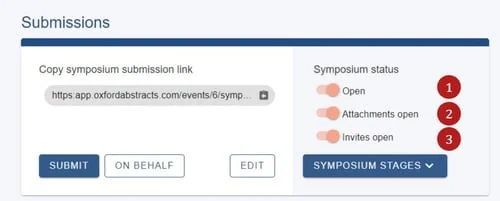
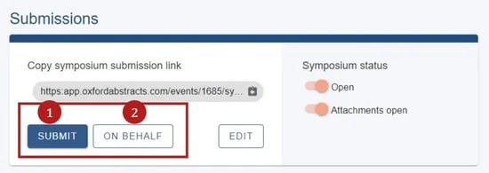
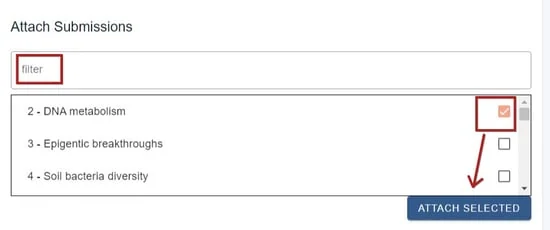
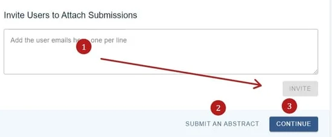
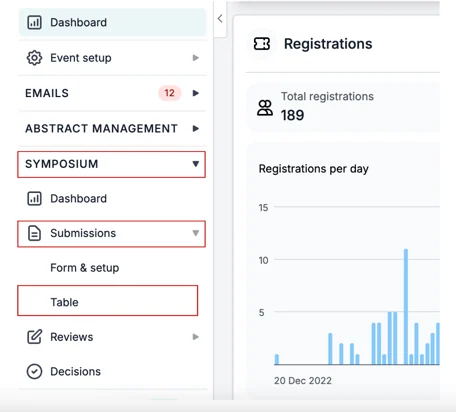
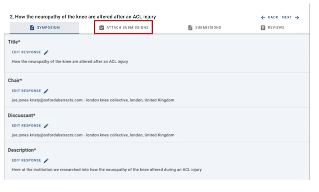
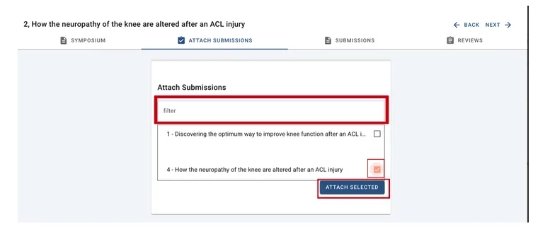
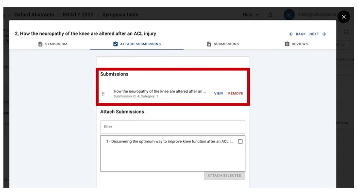

Collecting Symposia
For event organisersNot an organiser?
Once your symposia forms are ready, open submissions so people can propose symposia — and attach abstracts to them yourself where you need to.
Open and close symposium submissions#
Go to Event dashboard → Symposium → Dashboard and find the Submissions panel. Under Symposium status** you will see up to three switches.
- Switch the top slider to the right to open symposium submissions.
- The second controls whether abstracts can be attached to symposia. It works independently of the first, so you can close new symposia while still allowing attachments to existing ones.
- The third only appears if you chose a Private symposium. It lets symposium submitters invite contributors, and is also independent of the others.
If you have Multi-stage, the blue Symposium stages dropdown lets you choose which stages these three switches apply to.

The left-hand side of the panel works exactly like opening and closing abstract submissions.
Create a symposium as an administrator#
You can create symposia yourself, or on someone else's behalf. Submissions do not need to be open for admins to do this.
Go to Event dashboard → Symposium → Dashboard and scroll to the Submissions** section. You have two options: submit as an administrator, or submit on behalf of a third party.

The only difference is that submitting for a third party asks for their email address. They still need to register an account before they can access it.
Complete the form and click Submit.
Attach submissions to a symposium#
There are two routes, depending on where you are.
From the symposium you have just created. Scroll to the Attach submissions section, where you will see the submissions available. Filter by ID or title if the list is long, tick the ones you want, then click Attach selected.

Further down you can also invite users to attach submissions by entering their email address and clicking Invite. Note that inviting is only available if you chose Private when setting up your symposia — it does not appear for public or admin-only events.

From the symposium table, for any existing symposium. Go to Event dashboard → Symposium → Submissions → Table**.

Click the row of the symposium you want, then open the Attach submission tab at the top of the page.

Search for the submission using words from its title in the filter box, tick it, and click Attach selected at the bottom right.

The submission now appears on the symposium. Click the X at the top right to return to your dashboard.

Next: Symposia reviewing.
Didn't solve it? Ask our support team
No question is too small, and there's no charge for asking. Raise a ticket and someone who knows the software will pick it up.
Did this page solve it?
Thanks — this helps us fix it.